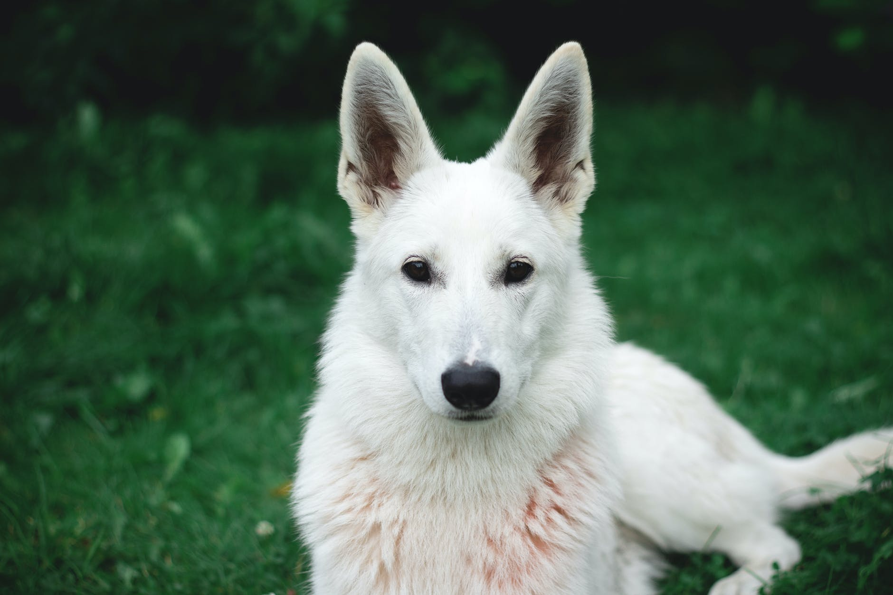
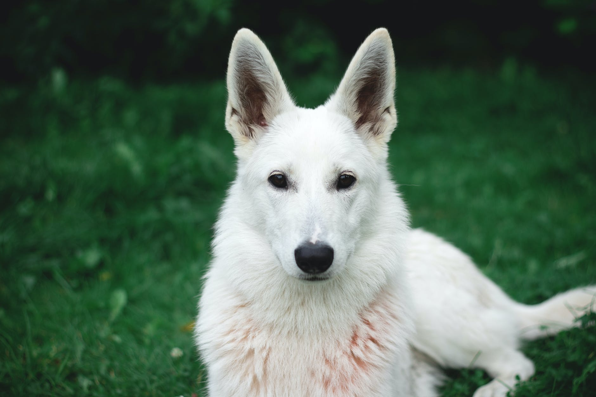
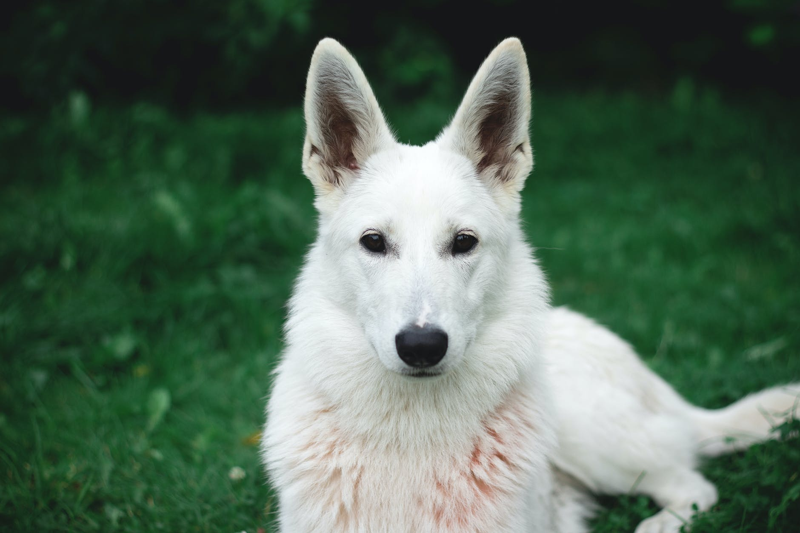

You would be surprised to know that there are 5 different types of “show line” German Shepherd dogs that you can find. The most popular distinction that separates them among their different types is the color of their coats. They are also sometimes differentiated by the length of their hair and coat, but that is generally done only for purebred German Shepherds. Apart from being characterized based on their looks, they are also differentiated based on their personality and health, which is known as “working lines”.
